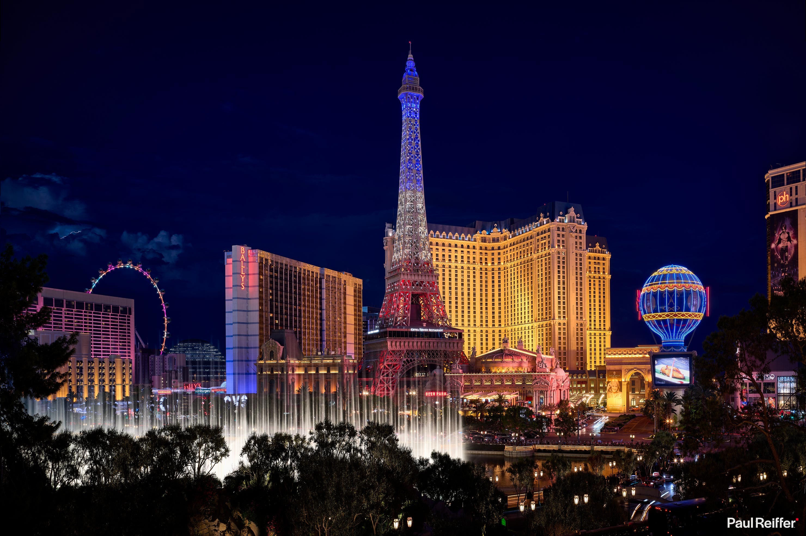

Which city is shown in this image?

Which city is shown in this image?

<think>
Hmm, let's see. The question is asking which city is shown in the image. Okay, first I need to look at the landmarks in the picture. There's a replica of the Eiffel Tower, right? That's probably a clue. Also, there's a large building with a hot air balloon-shaped structure and a Ferris wheel. Wait, but more importantly, I remember that Las Vegas has several replicas of famous landmarks because it's known for its themed hotels. Oh, and there's the Bellagio hotel with the fountains—wait, but actually, the building with the Eiffel Tower replica is the Paris Las Vegas hotel. Yeah, Paris Las Vegas has an Eiffel Tower replica. Then there's the High Roller Ferris wheel on the left side, but I think the largest observation wheel in the world is the High Roller in Las Vegas. Also, the building labeled "BALLY'S" is another casino hotel. Oh, and there's a sign saying "BEER PARK," maybe part of the casino complex. Additionally, on the right side, there's a building with "ph" on top—maybe Planet Hollywood? Wait, Planet Hollywood is also in Las Vegas. Also, the iconic Strip in Las Vegas has these big hotels with replicas. The image has multiple recognizable Las Vegas landmarks: the Eiffel Tower (Paris Hotel), the Bellagio fountains are there too—I can see the water fountain display. Wait, Bellagio has the fountains, but here the Eiffel Tower is prominent. But Las Vegas is known for having those replicas. So all these elements point to Las Vegas. Let me check again: the Ferris wheel is likely the High Roller, located at the New York-New York hotel or another place, but still in Las Vegas. The presence of multiple hotels like Bally's and Paris Las Vegas confirms it's Las Vegas, Nevada. So the city shown is Las Vegas.
</think>
<answer>
The image depicts a nighttime scene featuring prominent landmarks. A key visual element is the replica of the Eiffel Tower, characteristic of the Paris Las Vegas hotel. Nearby, a large illuminated Ferris wheel (likely the High Roller) and a fountain display align with the Las Vegas Strip’s signature attractions. The building labeled “BALLY’S” and other casino-hotel structures further confirm the location. Las Vegas is renowned for hosting scaled replicas of global landmarks alongside its entertainment-focused architecture and vibrant nighttime illumination.
\boxed{Las Vegas}
</answer>